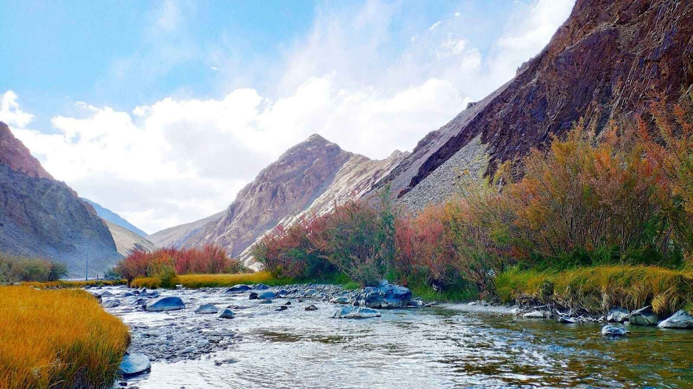
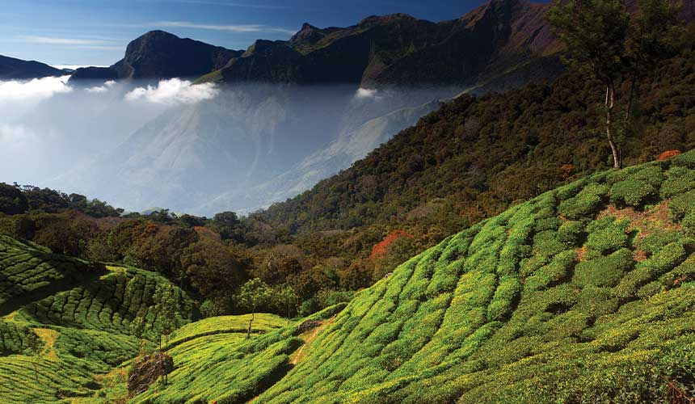

The summer season is filled with the sweetness of mangoes, the joy of summer holidays, and the unbearable heat. To beat the heat many of us run toward the hill stations - be it in Uttarakhand, Himachal or the Western Ghats. It is the diversity of India‘s landscapes that offers serene retreats to thrilling adventures amidst snow-decked peaks.
Explore the beauty of Shimla with its old-world colonial charm, the mist-shrouded tea plantations of Munnar to the hub of adventure Manali. You can travel further south to Ooty snuggled in the Nilgiri Hills. Get your bags ready as you explore these beauties in style during summer.
1.Spiti Valley
Pre-book your Spiti Valley tour and explore this high-altitude destination located in Himachal Pradesh which is known for its pristine scenery, ancient monasteries, quaint hamlets, and rich culture. It is a piece of heaven for thrill seekers as well as nature lovers with its unblemished natural beauty.
It is a thrilling all-year destination but there is something different about it during summers. The landscape transforms as the snow begins to melt and visitors can catch a glimpse of lush meadows, glistening streams, and snow-covered peaks far in the distance.
The main highlight of the valley is the iconic Key Monastery which is also known as Kye Gompa and is located at an elevation of 4,166 m. The monastery is known for its architecture and is a maze of rooms, prayer halls, and corridors. Fuel your trip with adventure as you trek to the Chandratal Lake, also known as “Moon Lake” as it is crescent-shaped. The lake is encompassed by snow-covered peaks and lush meadows. The trek is filled with picturesque views, mountain passes, and remote villages.
2.Ladakh, Jammu and Kashmir
Ladakh lies in the northernmost region of India and is one of the most tantalising tourist destinations of India. Explore the picturesque views of the snow-covered Himalayan ranges, high-mountain passes, high-altitude serene lakes, and architectural marvels as a part of the Ladakh tour.
Kickstart your trip as you visit Pangong Lake. The lake is famous for its blue waters that change colour throughout the day and mesmerising views of the towering mountains. Visitors can indulge in tranquil water activities like boating, fishing, and relaxing on the banks of the lake.
The next place of interest on the itinerary is the Nubra Valley as it is encompassed by snow-capped mountains and green valleys. This high-altitude desert is ideal for indulging in camel rides on two-humped Bactrian camels, trekking, ATV rides, ziplining, and camping. Visit the iconic Diskit Monastery which is popular for its 32 m high Maitreya Buddha.
3.Shimla, Himachal Pradesh
The most high-ranking hill station on the bucket list of the vacationers is Queen of the hill stations -Shimla. This summer capital of Britishers still retains the old-world charm and is filled with buildings that are fine examples of colonial architecture as they have stood tall against the trials of time.
Visit the main street of Shimla Mall Road as it is the hub of all activities and a great place to enjoy the evenings. Ascend the Jakhoo Hill as it is the highest point in Shimla with magnificent views of the valley below. And get blessed as you visit the Jakhoo Temple dedicated to Lord Hanuman and be cautious of the little mischievous monkeys. Fill your trip with enchanting memories as you ride the narrow-gauge toy train running from Kalka to Shimla. The train takes you through alluring landscapes and 103 tunnels.
4.Munnar, Kerala
Munnar is known for its tea estates, cascading waterfalls, and mist-covered hills. It is a tranquil hill station that lies in the Western Ghats. Besides its tea estates, it also houses the famous Eravikulam National Park which has the perfect setting to spot exotic animals.
It is considered as “Kashmir of South India” and was once a summer resort during the colonial era. Echo Point located at a distance of fifteen kilometres from Munnar is located on the banks of a lake and is known for its thrilling phenomenon of echoing.
5.Mount Abu, Rajasthan
Mount Abu, is Rajasthan’s hill station located in the Aravali range and is famous for its Jain temples-Dilwara temples. Besides visiting the temples the visitors can enjoy boating at the Nakki Lake which is a man-made lake dotted with enchanting natural wonders.
The best way to marvel at the scenic views of Mount Abu is by trekking the Guru Shikhar. The peak is named after Guru Dattatreya who resided here as a monk. The cave in present times is a temple in reverence and also houses the Mount Abu Observatory. For wildlife enthusiasts, the perfect place to explore is the Mount Abu Wildlife Sanctuary as it houses the rarest species of hyena and jackals.
6.Darjeeling, West Bengal
Darjeeling is located in the northernmost region of West Bengal at an astounding height of 2,045 m. It was one of the summer capitals during British rule and in present times is the most sought-after hill station. Darjeeling is famed for its tea estates and is often visited with Sikkim.
Other than tea estates, the hill station is famous for its toy train ride and captivating views of the Himalayas. Darjeeling is jam-packed with natural beauty and magnificence as you view the captivating sunrise from Tiger Hill and feel the warmth of locals as you explore the lively markets overflowing with Tibetan artefacts and handicrafts.
7.Ooty, Tamil Nadu
Ooty with its serene ambiance is one of the delightful places to visit in South India. It is also known as the “Tea destination of South India “ due to its vast expanse of tea gardens. This high-altitude hill station is adorned with lakes, botanical gardens, and cascading waterfalls.
Dolphin’s Nose is one of the most visited vantage points, located at an elevation of 1,000 ft and lies ten km from Coonoor. The location provides an amazing view of Catherine Falls and the peak of the rock resembles the nose of a dolphin, hence giving it the apt name.
A must for those who have a deep interest in horticulture is the Botanical Garden. The garden was established in 1848 and is located at the foothills of the Doddabetta peak which happens to be the highest peak of the Nilgiri Ranges. The garden is kept meticulously with a wide variety of rare plants and trees.
Conclusion
Varying from the snow-covered mountains of the Himalayas to the verdant Nilgiri hills of the South, hill stations in India provide diverse and unique experiences for travellers looking for solace, adventure, and escape from the heat of the plains. These captivating destinations lure admirers with their timeless charm.